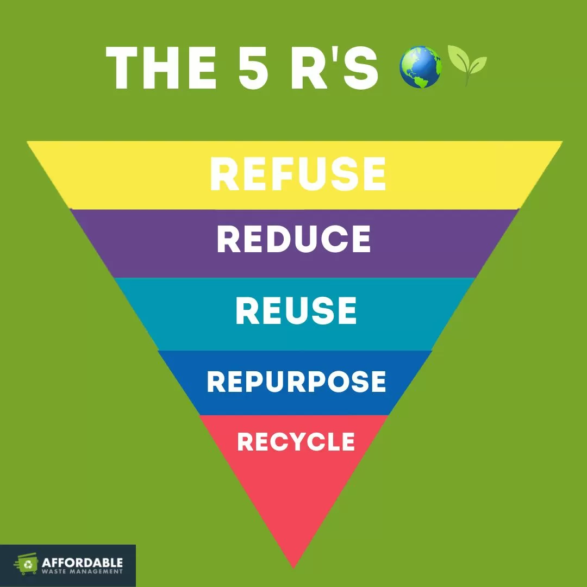

Recycling transform waste materials into new products, reducing the need for vigin resources and minimizing Environmental impact. It involves collecting, sorting, and processing materials such as paper, glass, plastic, and metals. By recycling, we can conserve natural resources, save energy, and reduce pollution.

Effective waste management goes beyond recycling. It includes reducing the amount of waste generated, reusing items whenever possible, and disposing of waste responsibly. Composing organic waste, single-use plastics, and supporting products made from recycled materials are key steps toward sustainable waste management.
Together, we can make a significant impact on our planet's health by adopting better recycling and waste management pracatice. Let's work towards a cleaner, more sustainable future.